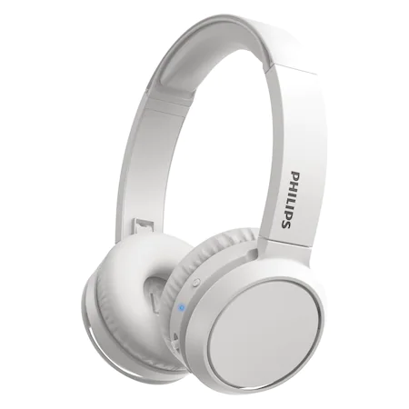

29 de ore de redare. Incarcare prin USB.
Obtine pana la 29 de ore de redare de la o incarcare de 2 ore prin USB-C. Daca bateria se descarca, o incarcare rapida de 15 minute iti va permite sa continui redarea muzicii inca 4 ore.
Banda de cap usoara, reglabila, cu pernuta
Disponibile in culori mate elegante, aceste casti supraauriculare dispun de o banda de cap cu pernuta, atat de usoara incat abia o vei simti. Cupele moi pentru urechi sunt marcate clar pentru urechea stanga/dreapta si pot fi inclinate pana obtii potrivirea perfecta.
Design complet pliabil pentru depozitare usoara
Lasa-te in voia basului. Cupele se pliaza complet si pivoteaza in interior, pentru depozitare usoara in buzunar sau in geanta. Pliaza-le si esti gata de plecare.
Buton multifunctional. Controleaza cu usurinta muzica si apelurile
Nu-ti place melodia redata? Omite-o cu o apasare lunga. Vrei sa respingi un apel? E suficienta o simpla apasare de buton. Asocierea Bluetooth inteligenta inseamna ca aceste casti isi amintesc ultimele dispozitive cu care au fost asociate.
Asociere inteligenta. Gaseste automat dispozitive Bluetooth.
O apasare lunga a butonului multifunctional si castile wireless cu Bluetooth sunt gata sa fie asociate cu un dispozitiv. Odata asociate, castile memoreaza ultimul dispozitiv cu care au fost asociate.
Design pliabil, compact pentru portabilitate usoara
Cu adevarat compact si pliabil, ceea ce este excelent pentru calatorie si va permite sa va luati muzica oriunde.
Tip On the ear
Tehnologie WIRELESS
Conectori Bluetooth
USB type C
Functii Pliabil
Microfon
Continut pachet 1 x Casti
1 x Cablu
Culoare Alb
Impedanta iesire 32 Ω
Raspuns in frecventa 20 - 20000 Hz
Raza maxima semnal 10 m
Timp incarcare 2 h
Timp operare 29 h
Diametru difuzor 32 mm
Greutate
Aceste casti supraauriculare dispun de difuzoare acustice puternice din neodim, de 32 mm, care iti ofera sunet clar si bas puternic. Cand vrei mai mult, apasa butonul BASS Boost si vei simti imediat diferenta.
